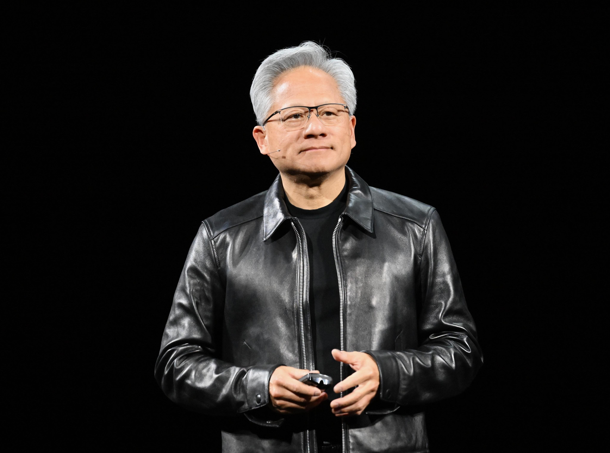

12 ноября 2026 года совет директоров опубликовал пресс-релиз: Дженсен Хуан оставил посты президента, генерального директора и члена совета директоров, решение действует немедленно. Формулировка предельно сухая. В релизе нет ни слова о причинах и нет цитаты самого Хуана.
Исполняющей обязанности CEO назначена Колетт Кресс — финансовый директор Nvidia с 2013 года, до этого почти 25 лет финансиста в Cisco и Microsoft. Она совмещает оба кресла: и.о. CEO и CFO — до назначения постоянного преемника. Совет также впервые в истории компании ввёл пост собственного председателя — им стал Харви Джонс, ранее возглавлявший Synopsys. Поиск постоянного CEO уже начался, обещают рассматривать как внутренние, так и внешние кандидатуры.
The Verge прямо связывает отставку с двумя громкими публикациями октября: историей о связи Хуана, в которой подозревают шпионаж в пользу Китая, и сообщением о второй внебрачной связи с топ-менеджером самой Nvidia. Сам Хуан публично не высказался. Новый председатель совета Джонс в релизе благодарит Хуана за «неизмеримый вклад» и заверяет, что операции, обязательства перед клиентами и продуктовая дорожная карта продолжатся без перерыва. Первая проверка этих заверений — отчёт за третий квартал фискального 2027 года, назначенный на 17 ноября, как и планировалось.
Хуан стоял во главе Nvidia 33 года — с самого основания в 1993-м. Под ним компания прошла путь от производителя игровых видеокарт до самой дорогой чиповой компании мира и главного бенефициара ИИ-бума. Это первая смена власти за всю историю Nvidia, и впервые её будет вести не инженер-основатель, а финансист. Для рынка ИИ-инфраструктуры это неопределённость уровня дорожных карт: крупнейшие партнёрства и сделки последних лет были выстроены лично под Хуана.
Совет ведёт поиск постоянного руководителя. Имена из неофициальных утечек не воспроизводим: пресс-релиз обещает рассмотреть внутренние и внешние кандидатуры — и только. Будущие выплаты и формулировки «вклад неизмерим» читайте как вежливый развод, а не golden parachute: деталей соглашения об уходе релиз не содержит.
Мы вели эту цепочку с самого начала: 9 ноября совет директоров объявил о независимом расследовании — оно продлилось три дня и закончилось отставкой (прежний разбор — в канале, выпуск от 9 ноября).